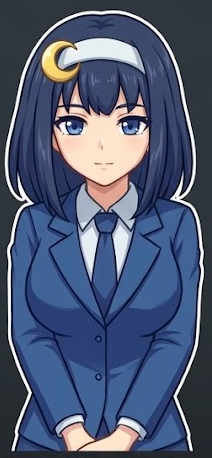

Secretaria privada en estilo anime cel-shaded. Reacciona a su propia respuesta y siempre va die-cut con contorno blanco tipo sticker. Set completo en assets/asistente/anime/.
assets/asistente/anime/